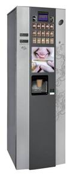

Контактная
информация
информация
Адрес:ул. Явар Алиев 22
Баку, Азербайджан AZ 1026,
Tel.: 012 424 31 48
E-mail: vending@vento.az
Coffeemar G250

Кофемолка с емкостью вместимостью 2300 г. кофейных бобов.
4 контейнера вместимостью:
* сливки 1700 г.,
* шоколад 1350 г.,
* сахар 2100 г.,
* кофе без кафеина 700 г.,
* 250 стаканов и 250 палочек для размешивания
* бойлер 370 мл.
Особенности
* Стильный дизайн,
* Функция самоочистки,
* Температурный контроль бойлера,
* Большой LCD дисплей 100х90мм.
В цену стандартной комплектации входит:
* Банкното приемник BT-10,
* монето приемник J-2000 с функцией сдачи производства JOFEMAR (Испания)
* система автономного водоснабжения (конистра, фильтр, помпа)
Дополнительно:
* Устройство для чтения электронных карт
* Установка телефона
* Использование центра управления из офиса
Энергообеспечение:
* 220 V 50 Гц
* макс. мощность 1,1 Квт
Размеры и вес:
* высота, ширина
* глубина 1500 – 500 – 561 мм
* вес 100 кг.
Отличительные преимущества аппарата:
* антивандальные противовзломные копуса.
* корпус изготовлен из 1,5 мм коррозиеустойчивой стали.
* Большой LCD дисплей 100х90мм.